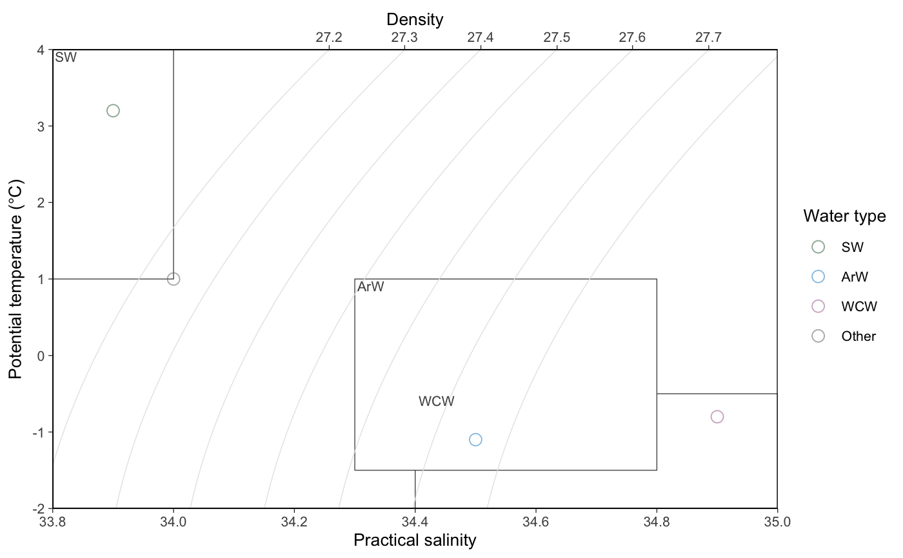
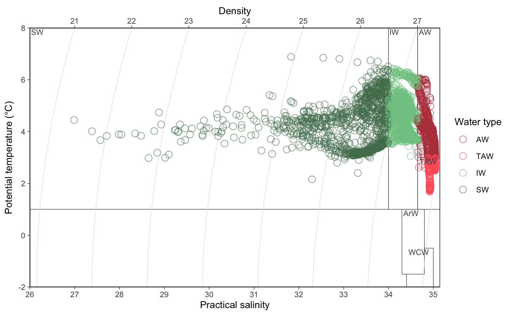
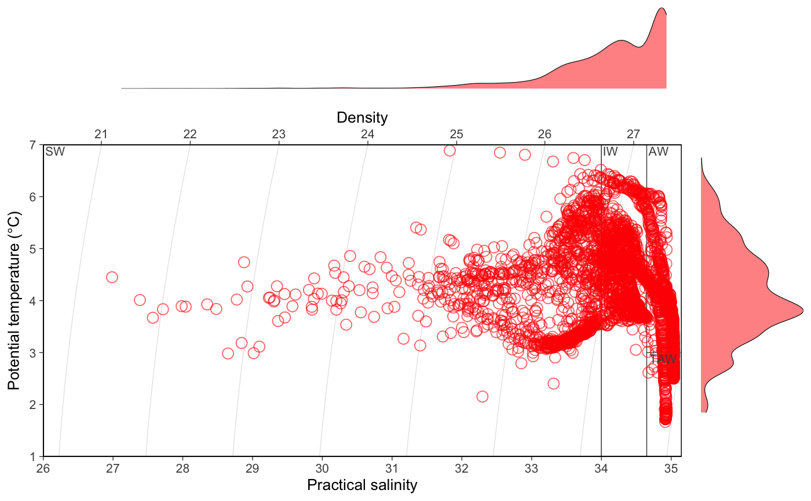

Makes a T-S plot from salinity and temperature data.
ts_plot( dt, temp_col = "temp", sal_col = "sal", WM = kongsfjord_watermasses, color_wmpoly = "grey30", xlim = NULL, ylim = NULL, color = "watertype", zoom = TRUE, nlevels = 6, color_isopyc = "grey90", symbol_shape = 1, symbol_size = 3, symbol_alpha = 0.6, color_scale = NULL, color_var_name = NULL, margin_distr = FALSE, margin_width = 0.15, margin_height = 0.2, plot_data = TRUE, base_size = 10 )
Arguments
| dt | data frame |
|---|---|
| temp_col | character specifying the column name that contains temperature information. Should be potential temperatures (theta) instead of in-situ tempretatures, if default |
| sal_col | character specifying the column name that contains salinity information. |
| WM | dataframe containing the water type definitions for polygons boundaries for water types. Set to |
| color_wmpoly | character defining the color for water mass polygon edges. |
| xlim | numeric vector specifying th limits for x-axis. If |
| ylim | numeric vector specifying th limits for y-axis. If |
| color | character indicating the mapping variable for color. Either a single character from |
| zoom | logical indicating whether the x- and y-axis should be limited to data. If |
| nlevels | number of automatically-selected isopycnal levels. Set to 0 to remove isopycnals. |
| color_isopyc | character defining the color for isopycnals. |
| symbol_shape | character or numeric. ggplot syntax for shape of plotting symbols. See |
| symbol_size | numeric. ggplot syntax for size of symbol. See |
| symbol_alpha | numeric value between 0 and 1 defining the transparency of symbols. Set to 1 to remove transparency. See |
| color_scale | named vector giving all |
| color_var_name | character giving the name that should be used in legend of color scale. See the |
| margin_distr | logical indicating whether kernel density estimates of temperature and salinity should be added to margins of the plot. |
| margin_width, margin_height | numeric specifying the width and height of the x- and y-axis margin plots as a propotion of the plot width ("npc" from |
| plot_data | logical indicating whether salinity and temperature data should be plotted. |
| base_size | Base size parameter for ggplot. See theme_bw. |
See also
define_water_type, the kongsfjord_watermasses data.frame ,the rijpfjord_watermasses data.frame
Other ts_plot:
ctd_kongsfjord,
define_water_type(),
kongsfjord_watermasses,
rijpfjord_watermasses
Examples
# Using example data dt <- data.frame(temp = c(1, -1.1, -0.8, 3.2), sal = c(34, 34.5, 34.9, 33.9)) ts_plot(dt)ts_plot(ctd_kongsfjord, zoom = FALSE) # show all of WMts_plot(ctd_kongsfjord, color = "area", margin_distr = TRUE) # scaling color to "area"ts_plot(ctd_kongsfjord, color = "red", margin_distr = TRUE) # no color scaling# example of graphical parameter modification ts_plot(ctd_rijpfjord, WM = rijpfjord_watermasses, symbol_shape = 16, symbol_size = 0.1, symbol_alpha = 0.8, margin_distr = TRUE, xlim = c(32, 35), color = "area")